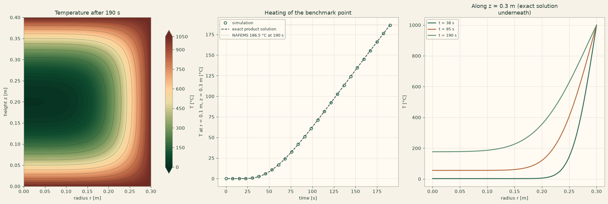
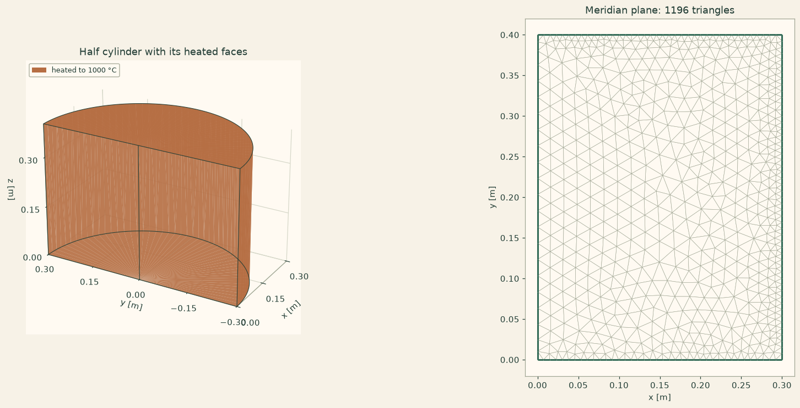

Docs › Examples › Axisymmetric transient heating of a cylinder
Heat transfer · 2D-axisymmetric
Axisymmetric transient heating of a cylinder
The NAFEMS axisymmetric transient benchmark: a cold steel cylinder whose whole surface is suddenly held at 1000 °C.

What it computes
OneSimulation reads the half cylinder from a STEP file, cuts it to its meridian plane and solves the axisymmetric heat equation with a revolved quadratic finite-element space and second-order BDF time stepping over 190 s. The script that builds the STEP file comes with the notebook.
What it checks
At r = 0.1 m, z = 0.3 m the temperature after 190 s is 186.46 °C against the NAFEMS target of 186.5 °C and the exact product solution of 186.49 °C; over the whole history the deviation stays below 0.08 K.
Geometry
The notebook starts at the import of the CAD file axisymmetric_cylinder_transient_heating.step: STEP (AP242), readable by any CAD program, with the names of the faces that the boundary conditions use. Put it next to the notebook.

The geometry script
The script axisymmetric_cylinder_transient_heating_geometry.py builds the geometry with the CAD objects of OneSimulation and writes the file. Change a dimension there, run it, and run the notebook again.
"""Geometry of the OneSimulation example "Axisymmetric transient heating of a cylinder".
Builds half of a solid steel cylinder, 0.3 m in radius and 0.4 m high, as a solid of revolution
about the z axis with the CAD objects of OneSimulation and writes
axisymmetric_cylinder_transient_heating.step. The heated surface consists of the faces bottom,
outer and top; the meridian plane y = 0 of the part is the computational domain.
"""
import numpy as np
from onesim.cad.d2 import Path, Profile, Segment
from onesim.cad.d3 import Revolution
radius, height = 0.3, 0.4
outline = Path(
(0.0, 0.0),
(
Segment((radius, 0.0), name="bottom"),
Segment((radius, height), name="outer"),
Segment((0.0, height), name="top"),
Segment((0.0, 0.0), name="axis"),
),
)
cylinder = Revolution(profile=Profile(outline), angle=np.pi).rotated(
(0, 0, 1), -np.pi / 2
)
cylinder.save("axisymmetric_cylinder_transient_heating.step")The notebook
The complete notebook, cell by cell. Run it to produce the figures and the comparison printout.
A solid steel cylinder, 0.3 m in radius and 0.4 m high, is at 0 °C. At \(t=0\) its whole surface is brought to 1000 °C and held there. Heat diffuses inwards; the temperature depends on the radius \(r\) and the height \(z\):
with \(k=52\) W/(m K), \(\rho=7850\) kg/m³ and \(c_p=460\) J/(kg K).
| face | condition | |---|---| | bottom \(z=0\), outer \(r=0.3\) m, top \(z=0.4\) m | \(T=1000\) °C for \(t>0\) | | axis \(r=0\) | symmetry | | initial state | \(T=0\) °C |
The cylinder comes from the CAD file axisymmetric_cylinder_transient_heating.step, half a solid of revolution; the script axisymmetric_cylinder_transient_heating_geometry.py builds it with the CAD objects of OneSimulation. The model is its meridian plane (\(x\) the radius, \(y\) the height).
Reference. A. D. Cameron, J. A. Casey, G. B. Simpson, NAFEMS Benchmark Tests for Thermal Analysis (Summary), NAFEMS, 1986: 186.5 °C at \(r=0.1\) m, \(z=0.3\) m after 190 s. The finite cylinder with a uniform surface temperature also has an exact solution, the product of the solutions for an infinite cylinder and an infinite slab (Carslaw and Jaeger, Conduction of Heat in Solids, 1959):
where \(\lambda_n\) are the roots of \(J_0\) and \(\alpha=k/(\rho c_p)\).
import numpy as np
from onesim.cad.exchange import load
from onesim.materials import IsotropicSolid
from onesim.meshing import TriangularMesher
from onesim.numerics import Numerics
from onesim.numerics.fem import FiniteElement, Lagrange, RevolvedH1SpaceFactory
from onesim.numerics.linear import SparseDirect
from onesim.numerics.time import BDF, BackwardEuler
from onesim.physics.heat_transfer import FixedTemperature, HeatConduction, HeatFlux
from onesim.simulation import Problem, Simulation
from onesim.simulation.initial_conditions import InitialValue
from onesim.visualization import plots, theme
from scipy.special import j0, j1, jn_zeros
theme.set()Geometry and mesh
load returns the half cylinder with its named faces; section with the plane \(y=0\) returns the meridian plane. Its side on the axis is cut from the flat face start of the half solid. The triangles are 2 cm in size and shrink to 7 mm along the heated faces, where the temperature changes fastest after the jump.
cylinder = load("axisymmetric_cylinder_transient_heating.step")
faces = cylinder.boundaries
plane = cylinder.section((0, 1, 0))
sides = plane.boundaries
radius, height = plane.size[:2]
mesh = TriangularMesher(
target_size=0.02,
grading=0.25,
local_sizes={"bottom": 0.007, "outer": 0.007, "top": 0.007},
).generate(plane)
fig = plots.figure(1, 2, size=(14, 6))
plots.geometry(
cylinder,
selection={"heated to 1000 °C": faces.bottom | faces.outer | faces.top},
labels=False,
camera=plots.Camera(elevation=25, azimuth=-150),
title="Half cylinder with its heated faces",
ax=fig[0],
)
plots.mesh(
mesh,
groups=("all",),
legend=False,
title=f"Meridian plane: {mesh.cell_count} triangles",
ax=fig[1],
)
plots.show()Model
Quadratic axisymmetric elements (RevolvedH1SpaceFactory) and the second-order BDF integrator with 100 steps of 1.9 s; the first step is a backward Euler step.
steel = IsotropicSolid(
density=7850.0,
specific_heat_capacity=460.0,
thermal_conductivity=52.0,
youngs_modulus=2.1e11,
poisson_ratio=0.3,
thermal_expansion_coefficient=1.2e-5,
)
model = HeatConduction(domain=plane.domain(), material=steel, heating=0.0)
problem = Problem(
name="Axisymmetric transient heating",
geometry=plane,
physics=(model,),
boundary_conditions=(
FixedTemperature(
boundary=sides.bottom | sides.outer | sides.top, physics=model, value=1000.0
),
HeatFlux(boundary=sides.start, physics=model, value=0.0),
),
initial_conditions=(InitialValue(model.temperature, 0.0),),
)
numerics = Numerics(
spatial=FiniteElement(element=Lagrange(order=2), provider=RevolvedH1SpaceFactory()),
linear_solver=SparseDirect(),
time_integrator=BDF(order=2, startup=BackwardEuler()),
)
temperature = (
Simulation(problem=problem, mesh=mesh, numerics=numerics)
.run(start_time=0.0, end_time=190.0, time_step=1.9)
.field(model.temperature)
)Results
The temperature at the benchmark point against the NAFEMS value and the exact product solution, at several times.
diffusivity = steel.thermal_conductivity / (
steel.density * steel.specific_heat_capacity
)
roots, odd = jn_zeros(0, 200), np.arange(1, 800, 2)
exact = lambda r, z, t: 1000.0 * (
1
- np.sum(
2
* j0(np.outer(r, roots) / radius)
/ (roots * j1(roots))
* np.exp(-(roots**2) * diffusivity * t / radius**2),
axis=1,
)
* np.sum(
4
/ (odd * np.pi)
* np.sin(np.outer(z, odd) * np.pi / height)
* np.exp(-((odd * np.pi / height) ** 2) * diffusivity * t),
axis=1,
)
)
times, history = temperature.time_series([[0.1, 0.3]])
history = history.ravel()
print("time [s] simulation [°C] exact [°C] deviation [K]")
for index in (10, 25, 50, 75, 100):
print(
f"{times[index]:8.1f} {history[index]:17.3f} {exact([0.1], [0.3], times[index])[0]:12.3f} "
f"{history[index] - exact([0.1], [0.3], times[index])[0]:+14.3f}"
)
print(
f"at 190 s: simulation {history[-1]:.2f} °C, NAFEMS 186.5 °C ({history[-1] - 186.5:+.2f} K), "
f"exact {exact([0.1], [0.3], 190.0)[0]:.2f} °C"
)Figure
The temperature in the meridian plane after 190 s, the heating history at the benchmark point, and the temperature along the radius \(z=0.3\) m at three times.
r = np.linspace(0, radius, 121)
fig = plots.figure(1, 3, size=(19, 6))
plots.surface(
temperature,
time=190.0,
limits=(0, 1000),
contours=11,
subdivisions=3,
xlabel="radius r [m]",
ylabel="height z [m]",
label="T [°C]",
title="Temperature after 190 s",
ax=fig[0],
)
plots.line(
points={"simulation": (times[::4], history[::4])},
reference={
"exact product solution": (
times[1:],
exact([0.1], [0.3], times[1:, None]).ravel(),
)
},
hlines={"NAFEMS 186.5 °C at 190 s": 186.5},
xlabel="time [s]",
ylabel="T at r = 0.1 m, z = 0.3 m [°C]",
title="Heating of the benchmark point",
legend="upper left",
ax=fig[1],
)
plots.line(
y={
f"t = {t:.0f} s": (
r,
temperature.evaluate(
np.column_stack((r, np.full_like(r, 0.3))), time=t
).ravel(),
)
for t in (38.0, 95.0, 190.0)
},
reference={
f"t = {t:.0f} s": (r, exact(r, np.full_like(r, 0.3), t))
for t in (38.0, 95.0, 190.0)
},
xlabel="radius r [m]",
ylabel="T [°C]",
title="Along z = 0.3 m (exact solution underneath)",
legend="upper left",
ax=fig[2],
)
plots.show()Going further
After 190 s, switch the surface to insulated and follow how the temperature evens out; the mean temperature then stays constant, a check of the energy balance. Or change the cylinder in axisymmetric_cylinder_transient_heating_geometry.py and write the STEP file again.